Tier 4 — Steel & DC¶
Component¶
| Item | What it’s for | Made at | Tags |
|---|---|---|---|
| CBcarbon brush block | Sliding contact for commutators | workbench |
brush, carbon, contact |
| CB |
Distribute power along switchboard | workbench |
copper, busbar, conductor |
| HKheavy knife switch | Connect or cut off a circuit by hand | workbench |
switch, manual |
| LAlaminated armature core | Core for dynamo and motor armatures | machine shop (steam) |
armature, core, steel |
| PLporcelain lamp socket | Hold and connect incandescent lamps | earthen kiln (updraft) |
lamp, socket, porcelain |
| PPporcelain pin insulator | Support live wires on poles | earthen kiln (updraft) |
insulator, porcelain |
| RFrewireable fuse | Protect circuits from overload | workbench |
fuse, safety |
| RS |
Structural frame for engine houses and mill floors | workbench |
steel, frame, structural |
| SCsegmented copper commutator | Reverse current in DC machines | machine shop (steam) |
commutator, copper, dc |
| SL |
Moves a set distance per turn | steel, leadscrew, thread | |
| TB |
Smooth-running sleeve for a shaft | bronze, bearing, plain | |
| TS |
Pass power along at higher speed | machine shop (steam) |
steel, shaft, drive |
| WI |
Core for dynamo field coils | iron anvil block |
magnet, core, iron |
Fluid¶
| Item | What it’s for | Made at | Tags |
|---|---|---|---|
| CT |
Tarry leftover from very hot coke ovens | coke oven (beehive) |
coal_tar, coke, byproduct |
Item¶
| Item | What it’s for | Made at | Tags |
|---|---|---|---|
| IL 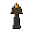 incandescent lamp (carbon) |
Provide electric light in buildings | glass bench |
lamp, incandescent, carbon |
Machine¶
| Item | What it’s for | Made at | Tags |
|---|---|---|---|
| DD 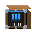 DC dynamo (workshop) |
Turn spinning power into DC electricity | machine shop (steam) |
dynamo, generator, dc |
| EL 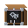 engine lathe (workshop) |
Turn rod stock into shafts, axles, screws, and pins | machine shop (steam) |
lathe, machine, turning |
| HBhot-blast stove | Warm the air before it enters the furnace | workbench |
ironmaking, preheat |
| RM 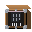 rolling mill (steam) |
Roll steel ingots into shapes | machine shop (steam) |
steel, rolling, machine |
| SD |
Drive light workshop machines | machine shop (steam) |
motor, dc, machine |
Material¶
| Item | What it’s for | Made at | Tags |
|---|---|---|---|
| BF 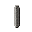 blast-furnace slag |
Byproduct of pig iron production | small blast furnace |
slag, byproduct |
| CFcarbon filament preform | Filament thread ready for lamps | earthen kiln (updraft) |
lamp, filament, carbon |
| DC |
Base conductor for coils and lines | wire-drawing bench |
copper, wire, conductor |
| F( 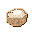 fireclay (refractory) |
Base material for furnace linings | earthen kiln (updraft) |
refractory, clay |
| FR |
Build hot-face furnace linings | earthen kiln (updraft) |
refractory, brick |
| IC |
Safe wiring for buildings and dynamos | workbench |
wire, insulated, electrical |
| RC |
Base metal for wire and windings | clay crucible (small) |
copper, metal |
| RS |
L-shaped section for frames and supports | rolling mill (steam) |
steel, angle, section |
| RS |
Support heavy machinery floors | rolling mill (steam) |
steel, beam, structure |
| RS |
For building work and boiler shells | rolling mill (steam) |
steel, plate, rolled |
| SR |
Roof and crown for very hot furnaces | earthen kiln (updraft) |
refractory, brick, silica |
| SG |
Reinforce steel frames at joints | rolling mill (steam) |
steel, plate, gusset |
| SR |
Track for heavy wagons and rail | rolling mill (steam) |
steel, rail, transport |
| SR |
Hot rivet for joining steel plate | iron anvil block |
steel, rivet, fastener |
Station¶
| Item | What it’s for | Made at | Tags |
|---|---|---|---|
| BCBessemer converter | Blow carbon out of pig iron to make steel | workbench |
steelmaking, bessemer |
| CO 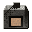 coke oven (beehive) |
Bake coal into coke | workbench |
coke, furnace, station |
| GBglass bench | Shape and seal small glass parts | machine shop (steam) |
glass, bench, lampworking |
| MS 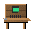 machine shop (electric) |
Upgrade shop with small electric motors | machine shop (steam) |
workshop, electric, machining |
| MSmachine shop (steam) | Machine and finish metal parts | workbench |
workshop, steam, machining |
| OHopen-hearth furnace | Refine pig iron and scrap into steel | workbench |
steelmaking, open-hearth |
| SB 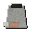 small blast furnace |
Smelt ore to pig iron using coke and flux | workbench |
ironmaking, blast-furnace, station |
| WDwire-drawing bench | Draw metal rods down into wire | machine shop (steam) |
wire, bench, forming |
Structure¶
| Item | What it’s for | Made at | Tags |
|---|---|---|---|
| IL 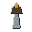 industrial lamp fixture |
Mount and protect electric lamps | workbench |
lighting, fixture |
| RT |
Lay track for mine carts and yard haulage | workbench |
steel, track, rail |
| WP |
Carry overhead electrical lines | workbench |
structure, pole, power |
| WS 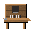 wooden switchboard panel |
Mount meters, switches, and fuses | workbench |
electrical, switchboard |
Field notes¶
The real process behind these items — what they are, how they were used, and why they matter. Tap to expand.
BCBessemer converter
A tilting steel vessel lined with basic refractory, used to blow air through molten pig iron and rapidly oxidize excess carbon and impurities to make steel.
Real-world use · Molten pig iron is poured into the converter, then powerful air blasts are blown up through tuyeres in the bottom. Oxidation of carbon and other elements both cleans the metal and releases heat to keep it molten. A basic (lime-rich) lining and slag enable removal of phosphorus from suitable pig irons.
- When · Invented in the 1850s and widely adopted in the later 19th century; basic Bessemer (Thomas) versions extended its range to high-phosphorus ores before being largely displaced by the open-hearth and later oxygen processes.
- Where · Found in converter shops beside blowing engines, ladles, and casting pits, often arranged in pairs or trios for continuous steel production.
Why it matters · The Bessemer converter is the iconic “blow” of the first cheap mass steel. Earlier refining routes were slow and batchy. A Bessemer blow turned many tons of pig iron into low-carbon steel in minutes by sacrificing pig iron to a blast of air, letting oxidation do both the chemistry and the heating. The basic-lined variant adds lime chemistry so you can handle phosphorous-rich pig iron. In game terms, this is your explosive, noisy upgrade from wrought-iron tinkering to serious structural and rail steel production.
DDDC dynamo (workshop)
Belt-driven DC dynamo sized for a shop, supplying direct current for lights, small motors, and tools.
Real-world use · Late-19th-century workshops and mills often added a DC dynamo driven from an existing line shaft or steam engine. The machine’s commutator and field coils converted mechanical work into a steady DC output for lamps, plating baths, and small machinery.
- When · From the 1870s and 1880s through early 20th century, especially before small AC alternators and rectifiers became commonplace.
- Where · Machine shops, tram depots, electroplating works, early lighting stations, and mixed-power factories that wanted electricity without building a full public station.
Why it matters · Dynamos mark the point where mechanical power turns into versatile electrical power. A small workshop dynamo shows the Gramme- or drum-armature pattern: an iron core with many coils, a commutator to rectify the induced currents, and field magnets that can be separately excited or self-excited. Teaching with this icon, you can trace how output depends on speed, field strength, and load. It is also a natural entry point to topics like voltage regulation--manual rheostats at first, then automatic regulators--and the difference between “lighting” dynamos and “plating” or “traction” sets tuned for particular loads. In a broader sense, the workshop dynamo is an enabling technology. Once a site can generate its own DC, everything from carbon lamps to electrochemistry and signaling becomes possible, even if the surrounding region has no public grid.
BFblast-furnace slag
A molten mixture of flux and gangue that floats on top of molten iron in furnaces, capturing impurities and later cooling into glassy or stony waste.
Real-world use · Tapped from blast furnaces and steel furnaces through separate slag notches, slag can be discarded, crushed for aggregate, or processed for cement and other uses, depending on chemistry.
- When · As old as smelting itself; only in the 19th–20th centuries did slag shift from nuisance waste to planned byproduct with commercial uses.
- Where · Seen as flows of glowing material running in separate channels from iron taps, later cooling into black or greenish heaps around furnace plants.
Why it matters · Slag is the other half of metallurgical chemistry. Every impurity the flux picks up ends up in slag, not in your metal. Historically, slag heaps were a signature of iron districts and a record of their processes. Modern plants design slags intentionally for both refining performance and later reuse. In game, you can treat slag as a parallel output stream that either needs managing as waste or can be repurposed into construction and cement recipes.
COcoke oven (beehive)
A domed, beehive-shaped brick chamber that slow-bakes bituminous coal into hard metallurgical coke, venting gases directly to the air.
Real-world use · Workers wheel coal into the oven, ignite it, and partially seal the opening. Over days of controlled burning, the coal drives off tarry volatiles and sinters into hard, porous coke that can support tall burdens in a blast furnace.
- When · Common in the mid-19th to early-20th centuries, especially in US and European coal and steel districts, before more efficient and cleaner by-product coke ovens took over.
- Where · Long banks of beehive ovens lined up along rail sidings near coal mines and blast furnaces, with constant smoke plumes and glowing doors at night.
Why it matters · The beehive coke oven is the smoky, transitional technology that bridges simple coal fires and fully integrated coke plants. Historically, these ovens wasted the gas and tar driven off from the coal, simply flaring or venting them. Towns near big beehive batteries were coated in soot and lit by orange glare at night. The payoff was a fuel--coke--that could “stand up stiff-backed” under tons of iron ore and limestone in a tall blast furnace, something raw coal could not do.
CB copper bus bar
copper bus bar
Solid copper bar used as a heavy current backbone in switchboards, panels, and distribution gear.
Real-world use · Early power stations and switchboards used flat or rectangular copper bars, mounted on insulators, as common nodes for feeders and outgoing circuits. Bolted joints and clamps let operators rearrange connections as loads and plant layout evolved.
- When · Late 19th century through the 20th century, from early DC stations to AC substations and industrial boards.
- Where · Open-frame switchboards, distribution panels, generator galleries, and heavy industrial control gear.
Why it matters · A busbar is the electrical equivalent of a line shaft: a central backbone that many circuits tap into. Bars of copper offer low resistance, high current capacity, and a tidy way to organize multiple feeds and loads without a tangle of parallel wires. Historically, open switchboards displayed these bars plainly--bare copper on porcelain standoffs, feeding knife switches, meters, and fuses. That layout makes it visually clear which feeders and machines share a source, but it also shows why early boards were dangerous to the unwary. This icon gives you a chance to discuss current density, heating, and short-circuit forces. Students can imagine what happens if a dropped tool or loose conductor bridges bars at different potentials, and why modern gear hides busbars inside metalwork instead of leaving them in the open.
DC drawn copper wire
drawn copper wire
Bare drawn copper wire used as a low-resistance conductor for telegraph, lighting, and low-voltage power.
Real-world use · Wire mills pull copper rod through progressively smaller dies to produce smooth, round wire. Bare wire strung on insulators carries telegraph and telephone signals; heavier gauges connect dynamos, switchboards, and early DC distribution circuits.
- When · From mid-19th-century telegraph networks onward, with rapidly expanding use in late-19th-century lighting and power distribution.
- Where · Telegraph and telephone lines, dynamos, switchboards, tramways, and inside machines as windings and leads.
Why it matters · Drawn copper wire looks simple, but it embodies both materials science and process control. Multiple drawing passes cold-work the metal, changing strength and flexibility. Annealing cycles restore ductility so the wire can be strung or wound without cracking. Historically, the availability of good, cheap copper wire is what made long telegraph and later power lines practical. Thicker gauges reduce resistive loss but cost more metal; thinner gauges save copper but limit distance and current. That trade-off shows up everywhere from line design to motor windings. In game terms, this icon can represent “generic bare conductor” and invite questions like: how thick must a wire be for a given load, how far can you run it before losses become intolerable, and why do you need insulators at all when the wire itself is so well behaved?
F(fireclay (refractory)
Alumina-rich clay that can be shaped and fired into bricks able to withstand furnace temperatures better than common earthenware.
Real-world use · Used as the base material for many refractory bricks and castables: lining early iron furnaces, stoves, kilns, and ladles where ordinary brick would soften or melt.
- When · Evolved out of ancient earthenware technology and became dominant in furnace linings before more specialized refractories arrived in the 19th–20th centuries.
- Where · Mined from fireclay deposits near coal and iron districts, processed into bricks or rammed linings at refractory works, then shipped to foundries and steel plants.
Why it matters · Fireclay is the first step beyond “ordinary brick” in high-heat technology. Historically, a lot of early blast furnaces and kilns were lined with packed clay or simple fireclay brick. It worked--but barely--at ironmaking temperatures. As plants pushed hotter and longer campaigns, engineers upgraded from generic fireclay to carefully formulated fireclay and then to silica and basic refractories. In game terms, fireclay is your starter refractory that lets you build serious furnaces before the full industrial chemistry tree comes online.
FR fireclay refractory brick
fireclay refractory brick
Shaped and fired bricks made from fireclay, designed to line furnaces, kilns, and stoves that run hotter than common building masonry can tolerate.
Real-world use · Stacked as arches, walls, and checkerwork in many 19th–20th century furnaces, fireclay bricks provided an inexpensive but heat-resistant lining for ironmaking, glass, and ceramic plants.
- When · From the early Industrial Revolution into the mid-20th century, fireclay bricks were the workhorse refractories of the iron and steel industry.
- Where · Seen forming the inner shell of cupolas, blast furnaces, stoves, kilns, and flues--often with a sacrificial hot face that gets replaced after campaigns.
Why it matters · A “refractory brick” sounds mundane, but it’s key infrastructure. These bricks turn a pile of iron, fuel, and air into a controlled thermal machine. They hold in heat, keep structural iron from melting, and survive cycles of expansion and chemical attack. Historically, managing brick quality and repair schedules was as important as managing ore supplies. For your tech tree, fireclay brick is the entry ticket to serious high-heat equipment.
HKheavy knife switch
Lever-operated knife switch with exposed blades and jaws, used to connect or isolate heavy circuits on open boards.
Real-world use · Mounted on porcelain or wooden panels, knife switches gave operators a visible, positive means of opening and closing feeders, bus ties, and machine circuits. Larger units handled high currents, often with multiple poles ganged under one handle.
- When · Late 19th to early 20th century, especially on early switchboards and distribution panels before enclosed, dead-front gear became standard.
- Where · Generating stations, workshops, and distribution boards where circuits needed manual, infrequent switching under the operator’s eye.
Why it matters · The heavy knife switch is iconic because it makes electrical state obvious: blades in the jaws mean “on,” hanging in free air means “off.” That visibility is comforting but deceptive--early boards left live metal within easy reach, and operators stood in front of energized copper every time they switched. You can use this icon to talk about arc formation, contact erosion, and why heavy loads are ideally opened under low current or by specialized breakers. Historical practice built in procedures--open field first, then armature; unload a feeder before opening its switch--to reduce dangerous arcs. It also illustrates the evolution of standards toward enclosed switchgear and interlocks. Once players have watched a knife switch fail in a bad way, they will understand why later panels hide the blades behind doors and link handles mechanically to protect both people and equipment.
HBhot-blast stove
A tall brick regenerator that stores heat in a checkerwork of refractories, then releases it into incoming air to preheat the blast for a blast furnace.
Real-world use · Blast furnace gas is burned inside the stove to heat silica or fireclay checker bricks; valves then switch the stove to ‘blast’ mode, running cold air through the hot checkerwork so it emerges as high-temperature air for the furnace tuyeres.
- When · Introduced in the 19th century hot-blast revolution and refined through the late 19th and 20th centuries as blast furnaces grew taller and hotter.
- Where · Clustered in groups of two to four beside a blast furnace, cycling in and out of ‘heating’ and ‘blasting’ service in rotation.
Why it matters · Hot blast stoves quietly doubled down on blast furnace efficiency. Cold-blast furnaces burned tremendous fuel to heat both ore and incoming air. By preheating the air itself in a regenerator, hot-blast practice cut fuel needs, boosted productivity, and allowed higher internal temperatures. In your tech tree, building stoves is what upgrades a modest blast furnace into a truly industrial-scale iron producer.
ILincandescent lamp (carbon)
Early incandescent lamp using a carbon filament sealed in a glass bulb, run from low-voltage DC or AC circuits.
Real-world use · Inventors refined carbonized fibers and bulb vacuums until filaments glowed for many hours without burning. Arrays of these lamps lit homes, workshops, streets, and ships, driving demand for central stations and stable distribution systems.
- When · Commercialized from 1879 onward, dominant in lighting until tungsten and gas-filled lamps displaced carbon filaments in the early 20th century.
- Where · Homes, factories, city streets, passenger spaces on ships and trains, and any site that adopted early electric lighting.
Why it matters · Carbon-filament lamps are why entire power systems were built in the first place. Their low operating voltage and modest efficiency forced engineers to put dynamos, feeders, fuses, switches, meters, and standards in place just to keep thousands of fragile filaments glowing. This icon lets you explore how lamp characteristics shaped systems. Early lamps drew significant current and were sensitive to voltage; too high and filaments popped, too low and light flickered and dimmed. That pushed designers toward short feeders, careful voltage drop calculations, and clustered central stations. You can also contrast carbon lamps with later tungsten types in terms of lifetime, color, and efficiency. In a teaching progression, the carbon lamp is the visible, tangible “reason” steam plants and dynamos suddenly spring up in towns that previously had only gas and candles.
ILindustrial lamp fixture
Rugged metal fixture with socket, shade, and mounting for incandescent lamps in workshops and engine rooms.
Real-world use · Factories and plants hung metal-shaded fixtures from ceilings, trusses, or machine frames, wiring them back to switchboards and branch circuits. Enclosures, guards, and drip-proof designs evolved to suit oily, dusty, or damp environments.
- When · Late 19th through early 20th century, tracking the spread of electric lighting into heavy industry and transport.
- Where · Machine shops, boiler houses, engine rooms, yards, ship holds, and platforms where durable, serviceable lighting was needed.
Why it matters · Fixtures turn a bare lamp into a usable light. The design of shades and reflectors shapes where light falls; the design of sockets and housings shapes whether the installation survives heat, vibration, and grime. Early industrial fixtures were simple but sturdy--porcelain or bakelite sockets, sheet-metal shades, and hooks or conduit fittings. With this icon you can discuss how illumination ties into workplace safety and productivity. Bright, focused light over lathes and benches reduces errors and accidents, while poor lighting hides hazards. It also raises issues like ingress protection: how much dust and oil can a fixture tolerate before it shorts or overheats? In game terms, distinguishing between a “bare lamp” and an “industrial fixture” lets you gate environments: makeshift wiring versus properly lit, well-equipped shops that feel like true products of the electrical age.
IC insulated copper wire
insulated copper wire
Copper conductor coated or wrapped with insulating material so it can be run through structures and equipment without shorting.
Real-world use · Early insulation used cotton, silk, gutta-percha, rubber, or varnished cloth. Makers wrapped or extruded insulation over copper wire to build indoor lighting circuits, instrument leads, coils, and later multi-core cables for buried or underwater runs.
- When · Mid- to late-19th century for telegraph and underwater cables, becoming standard for interior wiring and machinery by the turn of the 20th century.
- Where · Inside buildings, switchboards, lamps, motors, and control circuits, and in bundles for submarine and underground cables.
Why it matters · Insulated wire solves the routing problem. Bare conductors work in the open air, but inside walls, machines, and damp ground you need a barrier between copper and everything else. Early choices--natural rubber, gutta-percha, or fabric with varnish--aged, cracked, and absorbed moisture, which is why the details of insulation mattered so much. You can use this icon to talk about dielectric strength and safety. Close-spaced switchboard wiring and coiled motor windings depend on insulation thickness and quality; a tiny breakdown can arc, carbonize, and spread. Historical failures led directly to better materials and building codes. In play, this is also a good shorthand for “ready-to-run wiring harness” versus “raw metal.” It marks the point where players move from improvising bare bus links to pulling safe, flexible wiring through structures and machines.
OHopen-hearth furnace
A shallow, regenerative reverberatory furnace where pig iron, scrap, and flux are melted on a basic hearth under a hot flame, giving operators time to sample and adjust the steel before tapping.
Real-world use · Fuel and air are preheated in regenerators, then burned over a long hearth where pig iron and scrap melt. Lime and other fluxes form a basic slag that removes impurities. Operators take samples during the several-hour heat and tap when analysis shows the desired steel composition.
- When · Developed in the 1860s Siemens–Martin process and widely adopted from the late 19th through mid-20th century, eventually overtaking Bessemer steel in many countries before being replaced by basic oxygen and electric furnaces.
- Where · Large steelworks with long, low furnace halls, checker-brick regenerators, charging platforms, and tapping pits feeding ingot molds or continuous mills.
Why it matters · Open-hearth steelmaking trades speed for control. Where a Bessemer blow is over in minutes and hard to steer, open-hearth heats take hours and let chemists sample, adjust, and hit tighter compositions. The basic version uses lime-rich refractories and slags to handle troublesome elements like phosphorus. For your design, this furnace is the bridge from early, noisy steel bursts to the measured, laboratory-informed production of structural and plate steels.
PPporcelain pin insulator
Glazed porcelain insulator that screws onto a pin and carries bare line conductors clear of the supporting pole or crossarm.
Real-world use · As voltages rose beyond early telegraph practice, utilities adopted porcelain pin-type insulators and wooden pins to support copper or aluminum conductors. Shapes and glazes evolved to shed rain, resist cracking, and keep leakage paths long and clean.
- When · Pin insulators appear with mid-19th-century telegraphy and remain common on distribution lines into the 20th century, with designs adapting for higher voltages.
- Where · On wooden poles and crossarms along telegraph, telephone, and early electric power routes.
Why it matters · Porcelain pin insulators are a clear example of how geometry and material solve a safety problem. By lifting the wire away from the pole and lengthening the creepage path along the ceramic surface, they let bare, high-voltage conductors run through rain and dirt without continuously leaking to ground. Telegraph lines originally used glass and even simple knobs, but as power levels and voltages increased, tougher porcelain with better glaze became essential. Students can compare small telegraph insulators with larger, skirted power types and infer how voltage and pollution demand more insulation. In your world, this icon marks the jump from “experimental wire on trees” to a real overhead line system with standardized parts. It anchors topics like line spacing, insulator failure modes, and why early rights-of-way visually transformed landscapes.
RC refined copper ingot
refined copper ingot
High-purity copper ingot ready for rolling, drawing, or casting into electrical conductors.
Real-world use · After smelting, copper destined for electrical use is refined to high purity, then cast into ingots or cakes. Rolling mills and wire works turn these into rods, strip, busbars, and wire for telegraph lines, lighting circuits, and power systems.
- When · Copper as a metal is ancient, but high-purity electrical grades became crucial from the late 19th century onward with centralized power and telecommunication.
- Where · Smelters, refineries, rolling mills, wire-drawing works, and any industrial site feeding an electrical manufacturing chain.
Why it matters · Refined copper ingots are the starting point for almost every early electrical conductor. Once ore is smelted, impurities like sulfur and iron must be driven out by fire- or electrolytic-refining until the metal is pure enough that its resistivity is low and predictable. Historically, this step ties metallurgy directly to grid-building. Poorly refined copper heats and wastes power; clean copper makes long-distance lines and dense switchboards feasible. You can use this icon to connect mining, smelting, and refining to the very practical question of “why do our lines work at all?” It also helps unpack why copper became strategic. Telegraph companies, tramways, and lighting utilities all competed for the same refined metal, which influenced mine development, prices, and even the routing and voltage choices of early systems.
RFrewireable fuse
Porcelain or similar fuse body with terminals and a short length of replaceable fusible wire sized to blow under overload.
Real-world use · Early boards used rewireable fuses where an electrician threaded and clamped a calibrated wire between terminals. When fault current overheated the link, it melted and opened the circuit. After inspection, the carrier could be rewired and returned to service without replacing the whole unit.
- When · Common from the late 19th century through much of the 20th century in domestic and light industrial boards, gradually displaced by cartridge fuses and circuit breakers.
- Where · Distribution boards, switchboards, and service panels for lighting and small power circuits, especially in workshops and buildings.
Why it matters · Rewireable fuses are a very hands-on way to enforce current limits. The element is literally a known length and gauge of soft metal; choose it correctly and it will melt before conductors or equipment overheat. Choose it badly--or “cheat” with thicker wire--and you simply move the weak point deeper into the installation. This icon encourages discussion about protective coordination: the idea that fuses closest to a fault should blow first, preserving upstream feeders and sources. It also opens up human-factor issues: convenience versus safety, temptation to oversize fuses, and the value of clear labelling. In a teaching game, requiring players to stock correct fuse wire and inspect blown links reinforces that protection is not just optional flavor. It is a designed, maintained layer of safety that shapes how boldly you can load your copper, motors, and lamps.
RS rolled steel beam
rolled steel beam
An I- or H-shaped rolled steel section designed to carry bending and shear loads in building and bridge frames.
Real-world use · Rolled in beam mills from ingots or billets, steel beams form the skeletons of multi-storey buildings, cranes, and bridges, replacing massive masonry with lighter, stronger frames.
- When · Late 19th century onward, coinciding with skyscrapers, long-span bridges, and heavy industrial sheds.
- Where · Stacks of beams at structural mills, construction sites, and rail yards, ready to be cut, riveted, or welded into frameworks.
Why it matters · Steel beams are the backbone of “steel frame” architecture. They’re what let steel high-rises go taller than stone and brick ever could. For your tech ladder, beams are the gating ingredient for large spans and vertical builds: once you can roll and handle them, you can design taller mills, heavier cranes, and more ambitious infrastructure around your furnaces and ports.
RS rolled steel plate
rolled steel plate
Wide, flat steel sections produced by rolling ingots or continuously cast slabs down to plate thickness for boilers, hulls, tanks, and heavy structures.
Real-world use · Heated ingots or slabs are passed repeatedly through rolling mills, reducing thickness and increasing width until they become plates that can be riveted or welded into shells, decks, and structural skins.
- When · 19th–20th centuries onward, with plate mills accompanying the rise of ironclads, bridges, pressure vessels, and large steel ships.
- Where · Plate mills in integrated works and shipyards, with glowing sheets coiling off mill stands onto runout tables.
Why it matters · Rolled plate is what turns bulk steel into flat surfaces. Historically, it enabled armored ships, high-pressure boilers, oil tanks, and many of the big, flat things we take for granted. In-game, plate is a natural mid-tier ingredient between raw ingots and complex machines: it captures the idea that you need rolling infrastructure before you can build serious vessels, tanks, and hulls.
SR silica refractory brick
silica refractory brick
High-silica bricks formulated to keep their shape and strength at very high temperatures, ideal for hot blast stoves, coke ovens, and open-hearth roofs.
Real-world use · Used in the hottest zones of industrial furnaces--especially checkerwork in regenerators and arches over open-hearth and coke ovens--where they endure constant cycling near the softening point of most other bricks.
- When · Silica refractories became widespread in the 19th century with the rise of regenerative furnaces, coke ovens, and large blast furnaces, and remain important in high-temperature linings today.
- Where · Fabricated at specialized refractory plants and installed deep inside stoves, coke ovens, glass tanks, and steel furnace roofs where very few people ever see them directly.
Why it matters · Silica brick is a specialized answer to a hard problem: how do you line a space that sits just under white-hot all day? Regenerative hot blast stoves and open-hearth roofs had to survive constant firing, cooling, and chemical attack. Fireclay alone could not cope, so engineers shifted to high-silica bricks in these zones. In your world, upgrading from fireclay to silica refractories marks a big jump in what temperatures and furnace designs you can sustain without everything slumping into a glowing mess.
SD small DC motor
small DC motor
Compact DC motor for driving individual machines, fans, pumps, or tools from a DC supply.
Real-world use · Using essentially the same armature and field principles as a dynamo, DC motors convert electrical energy back into rotation. Small motors powered fans, lathes, drills, conveyors, and hoists, allowing selective electrification of tasks even in otherwise shaft-driven works.
- When · DC motors appeared from the mid-19th century onward, gaining wide industrial and traction use by the late 19th and early 20th centuries.
- Where · Workshops, factories, mines, ships, and vehicles wherever localized, controllable rotary power was needed.
Why it matters · A small DC motor is the mirror twin of a dynamo: supply current to the armature instead of drawing it out, and the commutator and field produce torque instead of voltage. This reciprocity makes it a powerful teaching example of electromagnetic induction and Lorentz forces. Historically, the arrival of reliable small motors began to erode the dominance of line shafts. Instead of one engine and many belts, engineers could put a motor directly on a machine, simplifying layout and improving safety. That change took decades, but the motor is the seed of that transformation. In your documentation, this icon is a good place to talk about series, shunt, and compound motor characteristics, speed control with resistors and field weakening, and why DC motors became especially important for traction and variable-speed work long before electronic drives existed.
SBsmall blast furnace
A tall shaft furnace where layers of iron ore, coke, and flux are charged at the top and a continuous stream of hot air is blown in at the bottom to produce molten pig iron and slag.
Real-world use · Ore, coke, and limestone are charged from the top; hot blast enters through tuyeres; inside, ascending gases preheat and reduce the burden while molten pig iron and slag collect at the hearth and are tapped through separate notches.
- When · Modern blast furnaces evolved from medieval bloomeries and early high furnaces, reaching massive, continuous operation by the 19th century and remaining central to integrated steelworks today.
- Where · Dominates integrated ironworks sites as tall stacks with skip hoists, gas uptakes, hot blast stoves, and slag heaps clustered around them.
Why it matters · The blast furnace is the heart of the classic ore → pig iron → steel route. Historically, it replaced small batch bloomery furnaces with a continuous, towering reactor that can run for years between relinings. “Small” in an industrial sense still means large compared to anything charcoal-fired. In game terms, this is the machine that justifies all the upstream charcoal, coke, flux, and refractory chains--and it produces pig iron and slag as distinct outputs you can route into later processes.
SR steel rail
steel rail
A specialized rolled steel section that forms the running surface for railway wheels, built to resist wear and heavy repeated loads.
Real-world use · Rails are rolled from steel blooms or billets, cooled, and laid onto sleepers with proper jointing or welding. They carry locomotives and wagons across continents, feeding ore, coal, and finished goods into industrial regions.
- When · Iron rails appear in the early railway era, but steel rails--more durable under heavy traffic--became standard from the late 19th century onward.
- Where · Rail mills, track-laying gangs, and the extensive networks around coalfields, ironworks, ports, and cities.
Why it matters · Steel rail closes the loop between your mines, coke plants, and mills. Railways made it practical to haul huge flows of low-value bulk cargo--ore, coal, limestone, and finished steel--over long distances. Historically, the steel industry and railways grew together, each feeding the other. In-game, rolling rails signals that you can now connect distant resources and factories into a single integrated system.
TS turned steel shaft
turned steel shaft
Round steel bar or shaft stock used to transmit torque between wheels, pulleys, gears, and machines.
Real-world use · Rolled or drawn steel bar is machined into line shafts, crankshafts, and axles, carrying rotary power from steam engines or motors along shop ceilings and into individual machines.
- When · Common in 19th–early 20th century line-shaft factories and still fundamental wherever rotating machinery needs strong, fatigue-resistant axles.
- Where · Machine shops, transmission galleries, and the overhead forest of line shafts and hangers in early industrial workshops.
Why it matters · Shafting is the anonymous steel that makes power distribution possible. Before individual electric motors on every machine, whole factories were driven by a central engine feeding long steel shafts along the ceiling. Belts then came down to each workstation. In your world, steel shaft stock is what lets you mechanically link boilers, engines, and mills into a coherent, gear-and-belt driven plant.
WP wooden power pole
wooden power pole
Treated wooden pole used to carry crossarms, insulators, and hardware for overhead telegraph and power lines.
Real-world use · Utilities selected straight, tall timber, peeled and often creosote-treated it, then set poles in rows along roads and railways. Crossarms, pins, insulators, and hardware turned these into routes for multiple circuits at different heights and clearances.
- When · From mid-19th-century telegraph expansion through 20th-century rural electrification, with steel and concrete poles gradually supplementing timber in some regions.
- Where · Roadsides, rail corridors, and rights-of-way forming the backbone of telegraph, telephone, tramway, and distribution networks.
Why it matters · The wooden line pole is infrastructure made visible. It supports wires mechanically, provides clearance from people and trees, and sets the rhythm of the line across the landscape. Pole spacing, height, and loading all encode the engineering choices behind a network. Historically, pole lines followed existing transport routes and property boundaries, which is why communication and power often shadowed roads and rails. Treating poles with creosote or similar preservatives significantly extended their life but introduced environmental and safety questions of its own. With this icon you can talk about route planning, sag and tension, and the shared use of poles by different services. A single timber might carry telegraph, telephone, lighting circuits, and traction feeds, stacking eras of technology onto one structure.
WSwooden switchboard panel
Thick wooden or composite panel that carries meters, knife switches, fuses, and busbars in an early open switchboard.
Real-world use · Before standardized metal enclosures, electricians mounted instruments and switchgear on polished hardwood or similar boards, often with slate or marble inserts around hotter or higher-stress parts. The panel formed a structural and insulating backdrop for wiring and busbars at the front and rear.
- When · Late 19th to early 20th century, especially in small workshops and early central stations before fire and shock hazards drove a move to all-noncombustible constructions.
- Where · Power rooms, generating stations, and industrial shops where one or more dynamos fed local lighting and machinery.
Why it matters · Wooden switchboard panels illustrate the transitional nature of early electrical engineering. Builders borrowed carpentry practice--framed panels, polished wood faces--and then bolted live copper, iron, and porcelain hardware to them. It worked, but it was not forgiving of mistakes or overheating. This icon lets you discuss layout thinking: grouping instruments, using busbars behind, routing wires on the back, and leaving clearance between items by voltage and function. It also brings up fire risk and the evolution of codes that eventually insisted on slate, marble, or metal instead of wood. In a teaching world, a wooden panel is an excellent “first serious board.” It is visibly hand-built and modifiable, but also clearly a step that players will eventually outgrow as they push to higher power and stricter safety.
WI wrought-iron magnet core
wrought-iron magnet core
Soft wrought-iron or low-carbon steel core stock used to concentrate magnetic flux in dynamos, motors, and electromagnets.
Real-world use · Machine shops forged or machined soft iron into yokes, pole pieces, and armature teeth. Wrapped with insulated copper windings, these cores carried alternating magnetization in dynamos, motors, relays, and lifting magnets, trading solid pieces for later laminated designs to reduce eddy losses.
- When · From early 19th-century electromagnets through late-19th-century DC machinery, with lamination practices and steel alloys improving into the 20th century.
- Where · Inside dynamos, DC motors, telegraph relays, electric bells, and any electromagnetic device that needs a shaped magnetic circuit.
Why it matters · A magnet core is where electricity and magnetism meet. Soft iron concentrates flux far better than air, letting a modest coil create strong fields for motors and generators. Wrought iron and mild steel, with low carbon and few inclusions, were favored because they magnetize and demagnetize easily without holding a strong permanent magnetization. Historically, builders first used solid iron cores, then discovered that thick sections heated badly from eddy currents under changing fields. The solution--laminating cores into thin, insulated sheets--shows how design evolves once losses are measured instead of just tolerated. In your documentation hierarchy, this icon explains why copper alone cannot make a dynamo or motor. Players can be guided to think in terms of magnetic circuits: paths, gaps, saturation, and how core shape controls torque and output.